Sprawdzenie falownika
„Czy Twój falownik współpracuje z magazynem?”
- Czy wiesz, co zrobić na każdym ekranie, bez czytania instrukcji?
- Czy wynik „pasuje / nie pasuje / sprawdzimy” jest dla Ciebie jasny?
- Zrób zdjęcie tabliczki swojego albo znajomego falownika i napisz w komentarzu, co odczytał sklep.
Co już wiemy: Poprawione po uwagach Magdy (10.11): na froncie napis „wystarczy jedno z dwóch”, pytanie o producenta zamiast modelu, werdykt w osobnej karcie z nagłówkiem, „Nie wiem / inny”, delikatniejsze zaznaczenie, „Odczytaliśmy” znika po ręcznym wyborze. Marka z frontu przechodzi do doboru. Odczyt zdjęcia tabliczki działa na sklepie testowym (naprawiony 10.11 wieczorem); zdjęcie w przebiegu to tabliczka testowa wygenerowana przez nas, sprawdź na swojej.
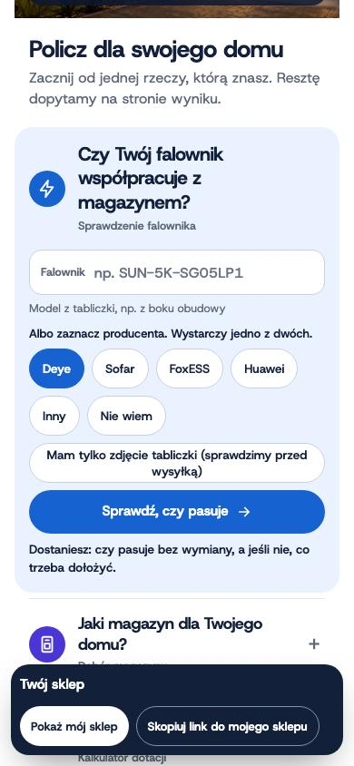
Wejście z frontu
Front: klient wybiera markę falownika (Deye) i dotyka „Sprawdź, czy pasuje”. Przycisk otwiera dobór w sklepie z wybraną marką.
Otwórz front z tym widżetem ↗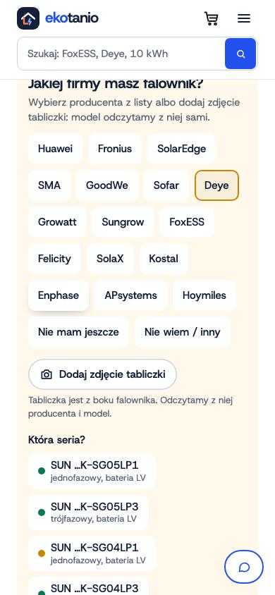
Krok 1
Dobór, krok falownika: lista marek i przycisk „Dodaj zdjęcie tabliczki”.
Otwórz ten krok w sklepie ↗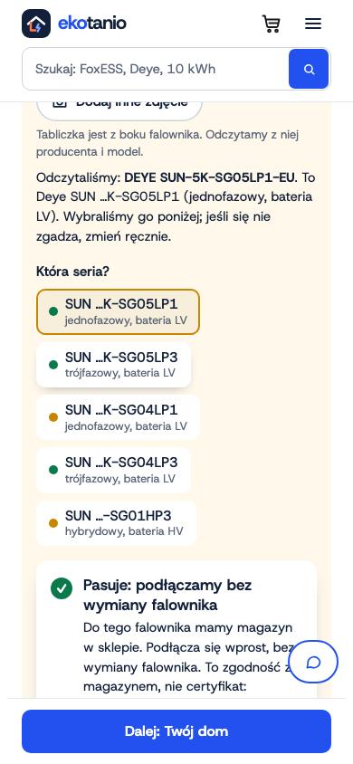
Krok 2
Klient robi zdjęcie tabliczki. Odczyt: producent i model, seria zaznacza się sama. Pod listą werdykt: czy do tego falownika mamy magazyn.
Otwórz ten krok w sklepie ↗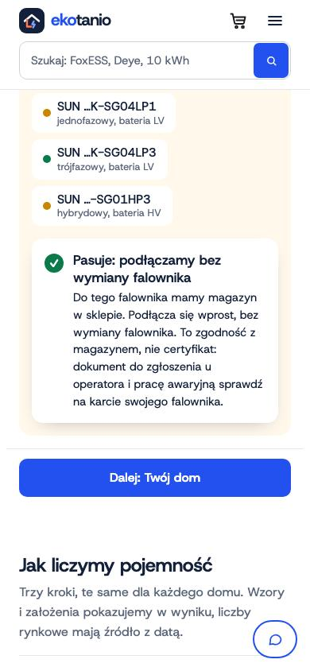
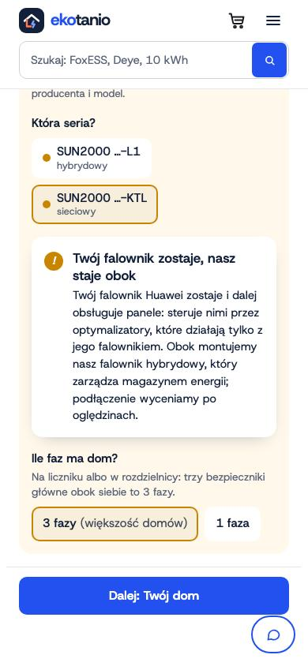
Krok 4
Inny przypadek: Huawei. Falownik zostaje, bo steruje panelami przez optymalizatory; nasz falownik z magazynem staje obok jako drugi (Twoja reguła z 04.11).
Otwórz ten krok w sklepie ↗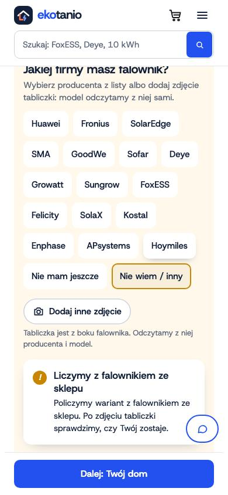
Dobór magazynu
„Jaki magazyn dla Twojego domu?”
- Czy pytania są zrozumiałe dla kogoś, kto nie zna się na fotowoltaice?
- Czy wynik mówi jasno, co kupujesz i ile zapłacisz?
- Czy kwota w koszyku zgadza się z kwotą na przycisku?
Co już wiemy: Poprawione 10.11: rachunek wpisany na froncie przechodzi do doboru (ekran 2 pokazuje 350 zł), klient nie zaczyna od zera. Poprawione 13.11 po uwagach Magdy: legenda kropek przy seriach falownika i warunek dotacji (2 kWh na 1 kWp) wprost pod kwotą.
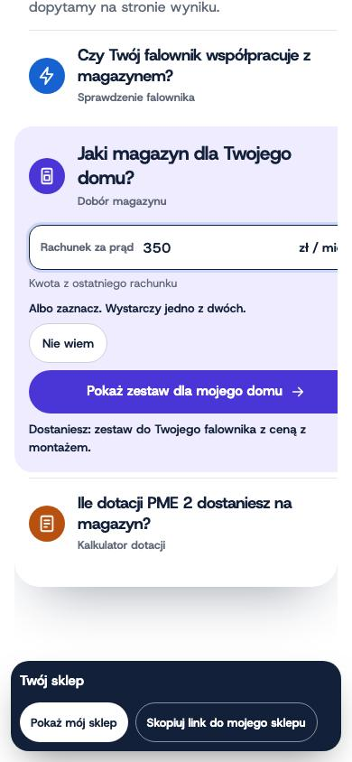
Wejście z frontu
Front: klient wpisuje rachunek za prąd (350 zł/mies.) i dotyka „Pokaż zestaw dla mojego domu”. Przycisk otwiera dobór, rachunek 350 zł przechodzi z frontu.
Otwórz front z tym widżetem ↗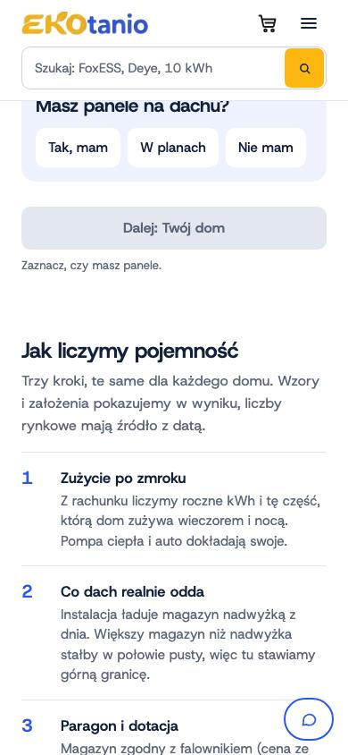

Krok 2
Moc 6 kWp, falownik Deye SG05LP1: zielona kropka przy serii = mamy magazyn.
Otwórz ten krok w sklepie ↗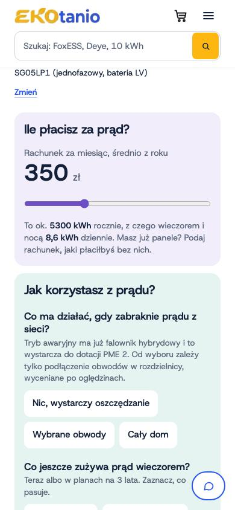
Krok 3
Ekran 2: rachunek (350 zł, przeniesiony z frontu), zasilanie awaryjne, pompa lub auto, rozliczenie.
Otwórz ten krok w sklepie ↗
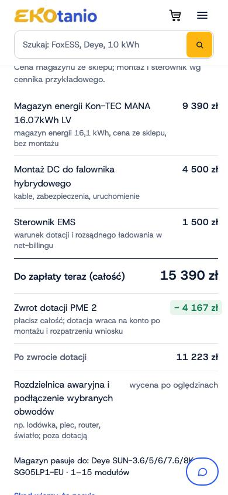

Krok 6
Koszyk po „Dodaj zestaw”: czy kwota w koszyku = kwota na przycisku.
Otwórz ten krok w sklepie ↗Kalkulator dotacji
„Ile dotacji PME 2 dostaniesz na magazyn?”
- Czy rozumiesz, od czego zależy kwota dotacji?
- Czy wiesz, kto i kiedy dostaje pieniądze z dotacji?
- Czy coś na ekranie przeczy innemu ekranowi (kwoty, opisy, „cena przykładowa”)?
Co już wiemy: Poprawione 10.11: montaż magazynu ma cenę realną 4 500 zł bez dopisku „cena przykładowa”; dopisek został tylko przy sterowniku EMS, którego cena jest jeszcze przykładowa. Moc paneli przechodzi z frontu (6 kWp).
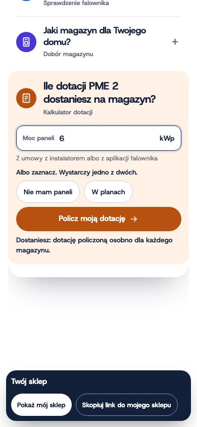
Wejście z frontu
Front: klient wpisuje moc paneli (6 kWp) i dotyka „Policz moją dotację”. Kalkulator w sklepie czyta moc z adresu (?kwp=6).
Otwórz front z tym widżetem ↗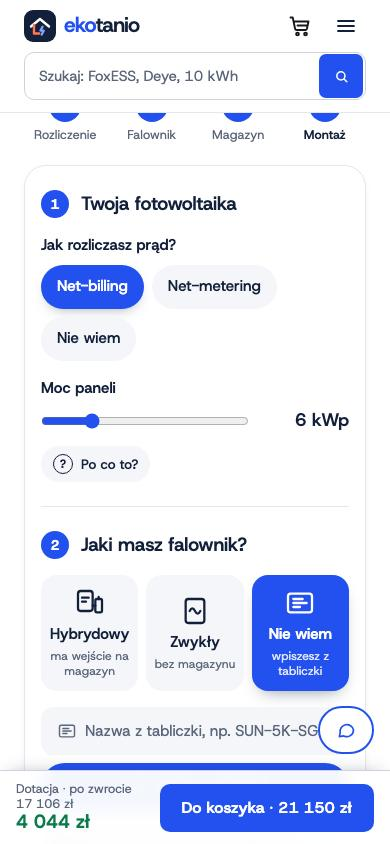
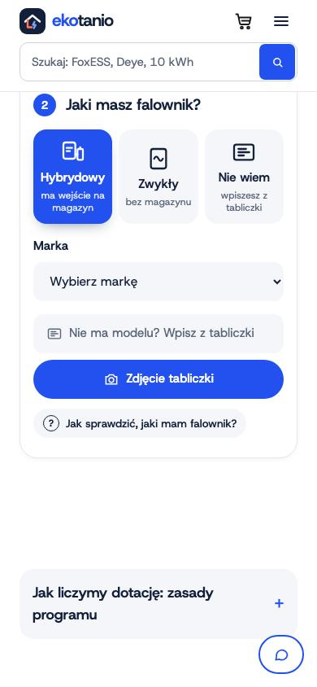
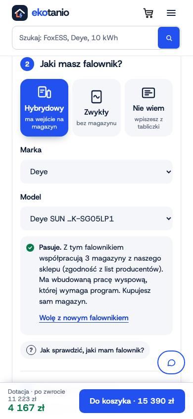
Krok 3
Krok 2: marka Deye i model SG05LP1 z listy (tu też jest „Zdjęcie tabliczki”).
Otwórz ten krok w sklepie ↗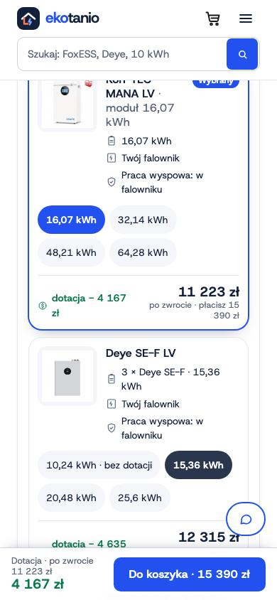
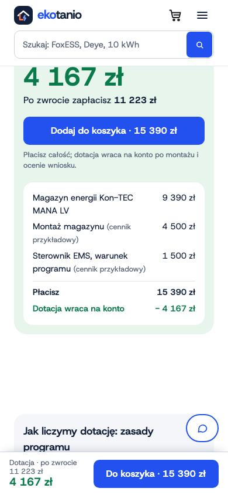
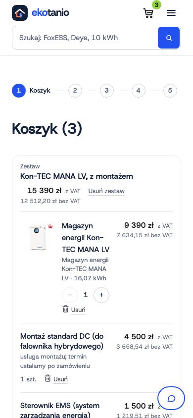
Oszczędność z magazynem
„O ile magazyn obniży Twój rachunek?”
- Czy od razu widzisz, ile zaoszczędzisz rocznie i po ilu latach się zwróci?
- Czy wiesz, jak sprawdzić, czy masz opusty czy net-billing?
- Czy kwota zestawu jest ta sama w kalkulatorze, w doborze i w koszyku?
Co już wiemy: Nowe 11.11: liczy tym samym silnikiem co dobór, więc zestaw i kwoty są te same co w doborze. Liczba główna zakłada, że magazyn pracuje w 85% dni; obok wariant ostrożny (kwiecień–wrzesień). Rozliczenie domyślnie opusty, bo tak ma większość posiadaczy paneli sprzed kwietnia 2022.
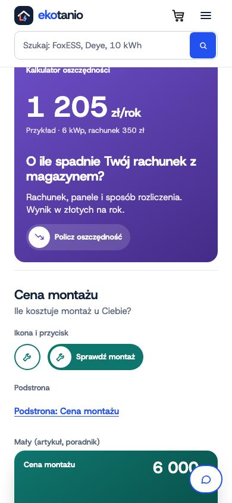
Wejście z frontu
Front: kafel „Policz oszczędność z magazynem” na stronie narzędzi. Dotknięcie otwiera kalkulator z odpowiedziami domyślnymi.
Otwórz front z tym widżetem ↗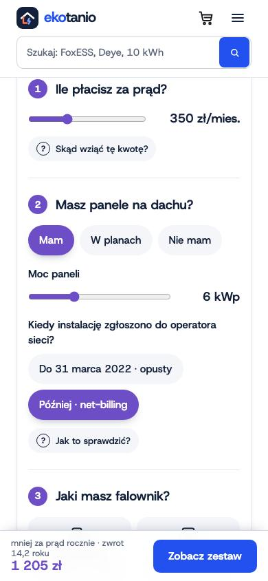
Krok 1
Kalkulator od razu z wynikiem na odpowiedziach domyślnych: rachunek 350 zł, panele 6 kWp, opusty, falownik „nie wiem” (liczymy zestaw z naszym falownikiem).
Otwórz ten krok w sklepie ↗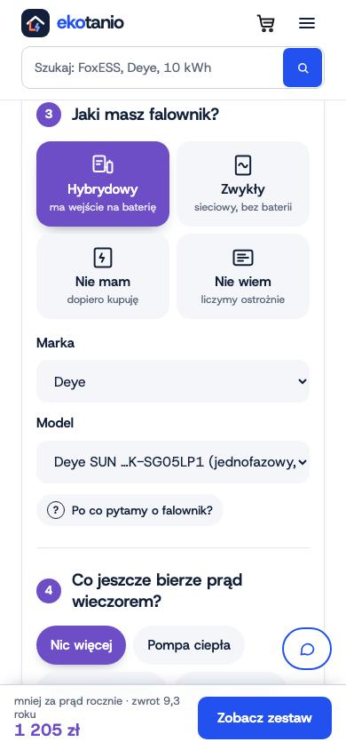
Krok 2
Klient zmienia rozliczenie na net-billing i wybiera swój falownik: Deye SG05LP1 (hybrydowy, mamy do niego magazyn).
Otwórz ten krok w sklepie ↗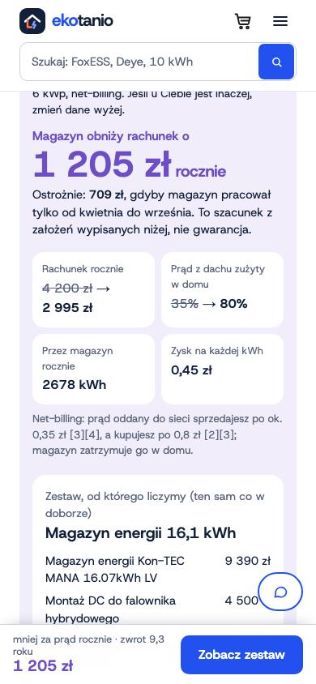
Krok 3
Wynik: o ile spadnie rachunek rocznie, wariant ostrożny, rachunek przed i po, autokonsumpcja.
Otwórz ten krok w sklepie ↗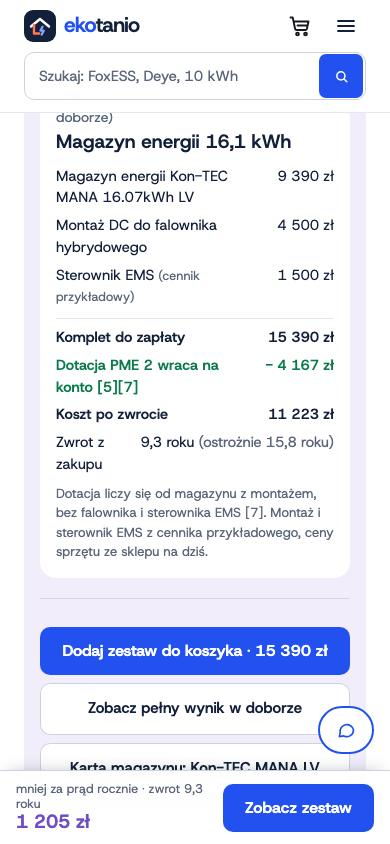
Krok 4
Zestaw, od którego liczymy: pozycje z ceną, dotacja, koszt po zwrocie, zwrot w latach.
Otwórz ten krok w sklepie ↗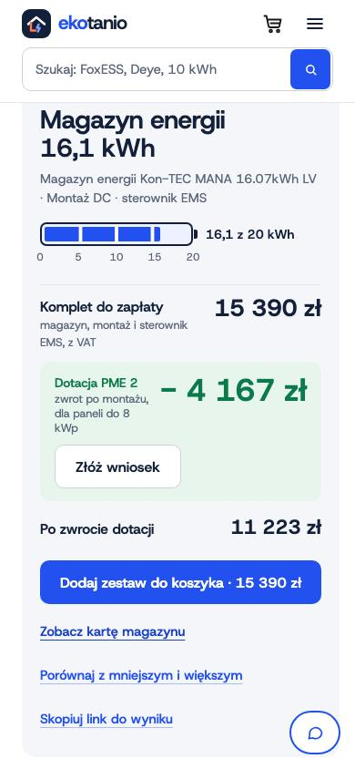
Krok 5
„Zobacz pełny wynik w doborze”: dobór otwiera się od razu na wyniku, ten sam zestaw i kwota.
Otwórz ten krok w sklepie ↗Cena montażu u Ciebie
„Ile kosztuje montaż magazynu u Ciebie?”
- Czy rozumiesz, co płacisz teraz, a co wyceniamy po oględzinach?
- Czy cena montażu jest ta sama tu, na stronie „Montaż” i w koszyku?
- Czego brakuje Ci, żeby zamówić montaż (termin, wykonawca, obszar)?
Co już wiemy: Nowe 11.11: pozycje montażu to te same pozycje co w doborze i koszyku. Cały cennik montażu jest przykładowy, bo nie jest jeszcze ustalony. Bez kodu pocztowego i kalendarza: obszaru i wykonawcy jeszcze nie ma, termin ustalamy po zamówieniu.
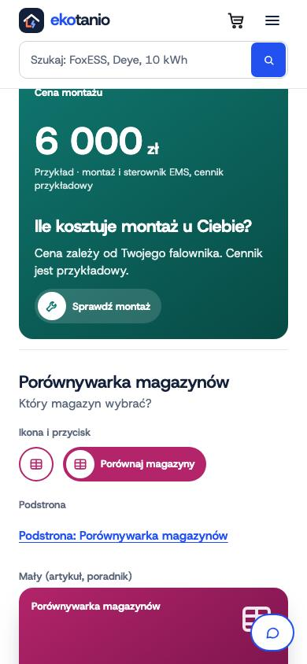
Wejście z frontu
Front: kafel „Sprawdź cenę montażu u siebie” na stronie narzędzi. Dotknięcie otwiera narzędzie z odpowiedziami domyślnymi.
Otwórz front z tym widżetem ↗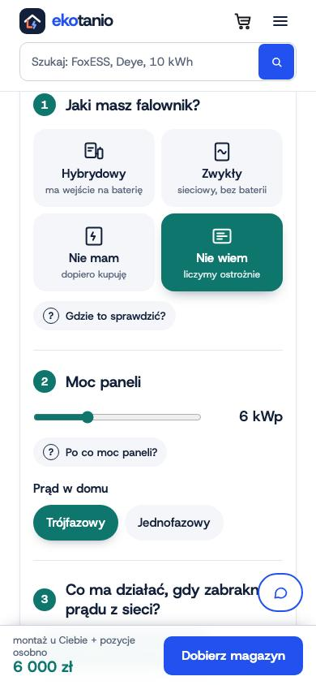
Krok 1
Od razu wynik dla „nie wiem, jaki mam falownik”: montaż do naszego falownika, falownik osobną linią, wymiana falownika płatna osobno.
Otwórz ten krok w sklepie ↗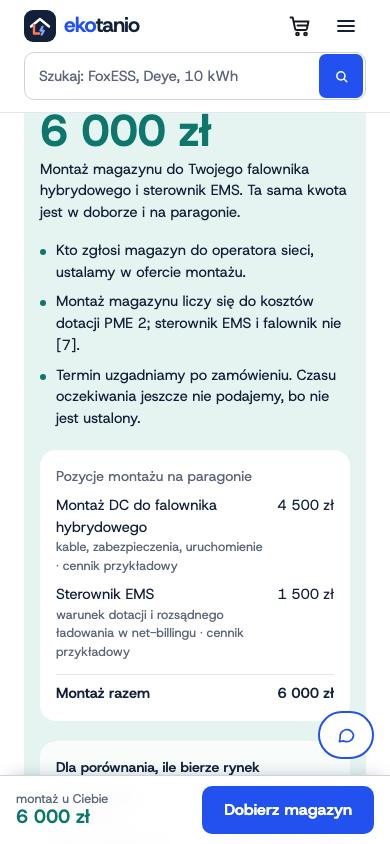
Krok 2
Klient ma Deye SG05LP1: montaż DC do jego falownika i sterownik EMS, bez falownika w zestawie.
Otwórz ten krok w sklepie ↗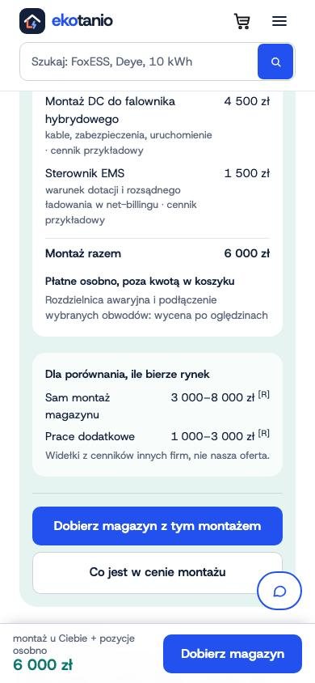
Krok 3
Zasilanie awaryjne wybranych obwodów: rozdzielnica dochodzi jako pozycja osobno, wycena po oględzinach.
Otwórz ten krok w sklepie ↗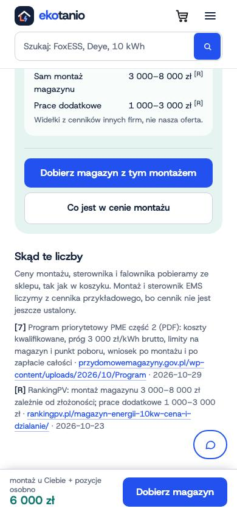
Krok 4
Dla porównania widełki rynku ze źródłem i wyjścia: dobór z tym montażem, co jest w cenie montażu.
Otwórz ten krok w sklepie ↗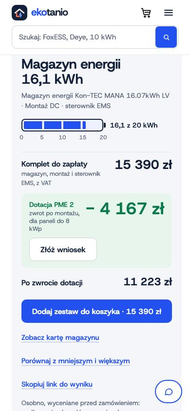
Krok 5
„Dobierz magazyn z tym montażem”: dobór na wyniku, z tym samym falownikiem i zasilaniem awaryjnym.
Otwórz ten krok w sklepie ↗Porównanie zestawów
„Mniejszy, polecany czy większy zestaw?”
- Czy na jednej mierze od razu widzisz, który zestaw brać?
- Czy rozumiesz, dlaczego mniejszy może stracić dotację, a większy może nie mieć sensu?
- Czy kwota na karcie jest ta sama w doborze i w koszyku?
Co już wiemy: Nowe 11.11, w spisie narzędzi to pozycja N5. Polecany zestaw to wynik doboru, mniejszy i większy są liczone tym samym wzorem. Wejście z wyniku doboru i z karty magazynu; na stronie narzędzi nie ma osobnego kafla, tak jak w spisie.
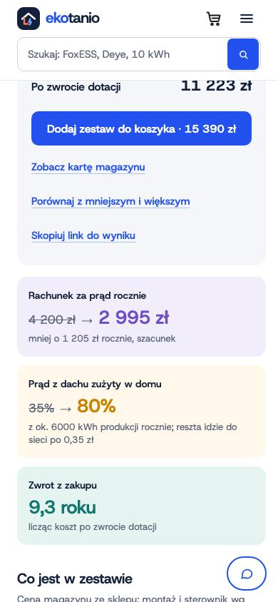
Wejście z frontu
Wejście z wyniku doboru: link „Porównaj z mniejszym i większym” pod kwotą zestawu.
Otwórz front z tym widżetem ↗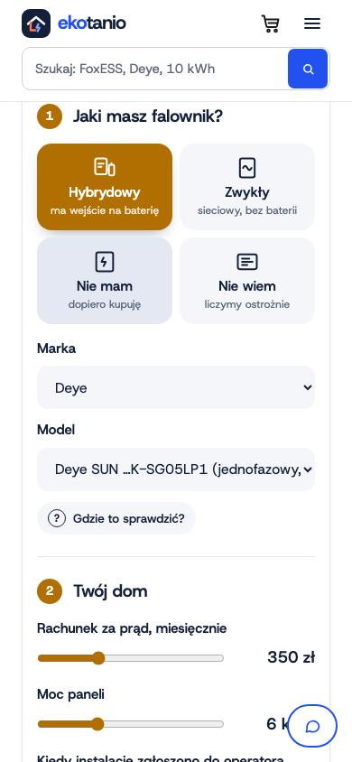
Krok 1
Te same odpowiedzi co w doborze: falownik i dom ustawione, wynik od razu.
Otwórz ten krok w sklepie ↗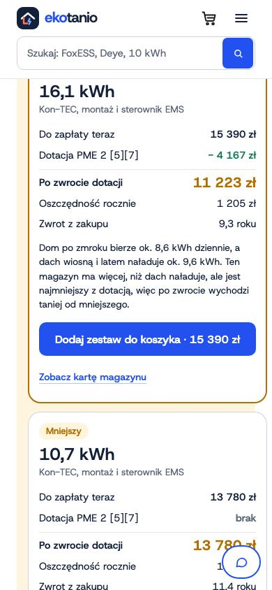
Krok 2
Polecany zestaw na górze: do zapłaty, dotacja, po zwrocie, oszczędność i zwrot. Kwoty te same co w doborze.
Otwórz ten krok w sklepie ↗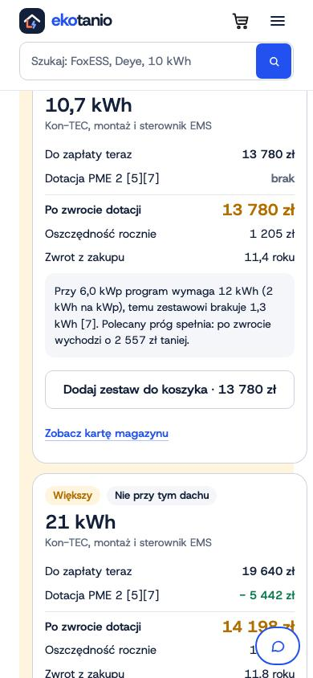
Krok 3
Mniejszy zestaw na tej samej mierze. Gdy nie łapie dotacji, karta mówi, ile brakuje do progu.
Otwórz ten krok w sklepie ↗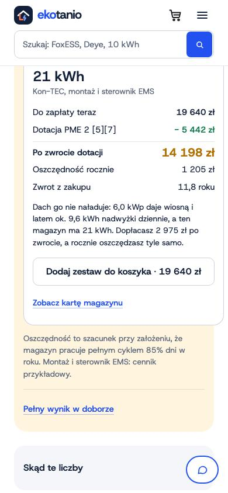
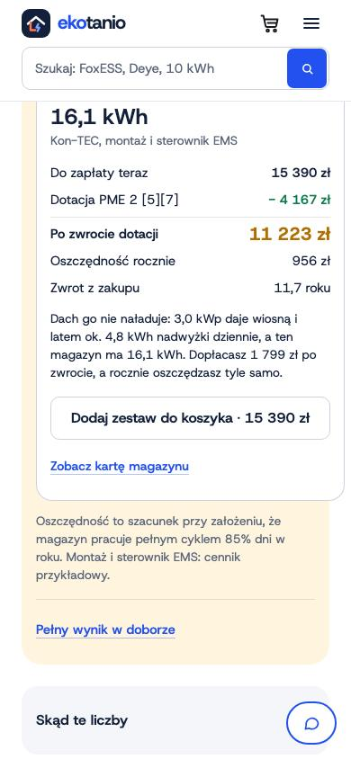
Krok 5
Mały dach, 3 kWp: większy zestaw dostaje uczciwe „nie”, bo dach go nie naładuje.
Otwórz ten krok w sklepie ↗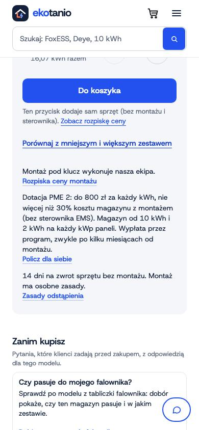
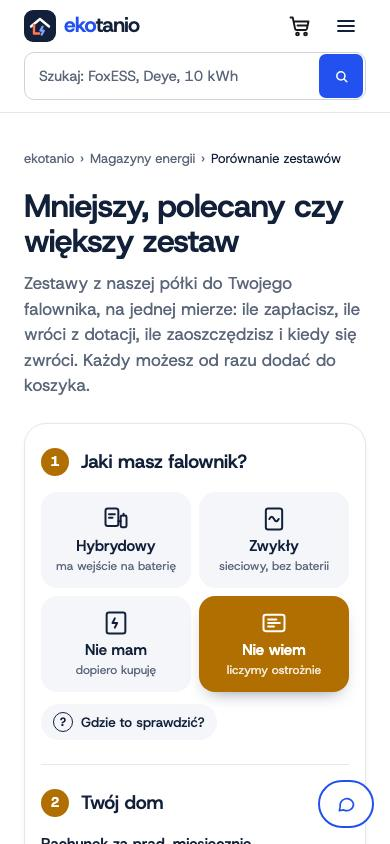
Krok 7
Z karty: magazyn, który klient oglądał, jest oznaczony w porównaniu.
Otwórz ten krok w sklepie ↗
Krok 8
Koszyk przy każdej karcie: w koszyku komplet z montażem, ta sama kwota.
Otwórz ten krok w sklepie ↗Godziny w awarii
„Na ile godzin wystarczy magazyn, gdy zgaśnie sieć?”
- Czy widzisz od razu, która wersja jest szybka, a która dokładna?
- Czy rozumiesz, co działa w awarii, a czego sklep nie obiecuje?
- Czy po przejściu do wersji dokładnej Twoje odpowiedzi zostały?
Co już wiemy: Nowe 11.11, dwie wersje. Liczy tym samym silnikiem co dobór. Godziny bez ładowania z paneli, sprawność 95%, głębokość rozładowania 90%; gdy falownik klienta nieznany, wynik liczymy na falowniku ze sklepu.
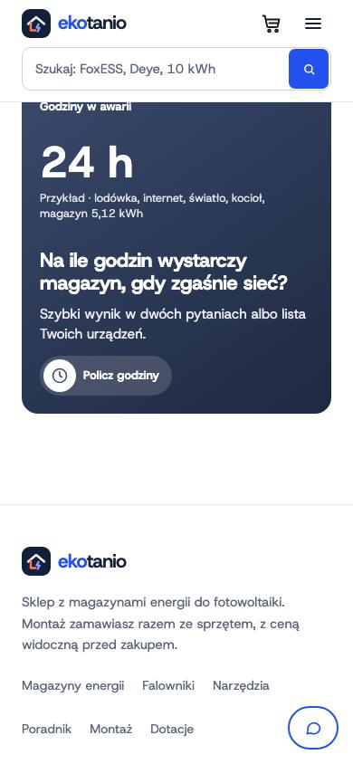
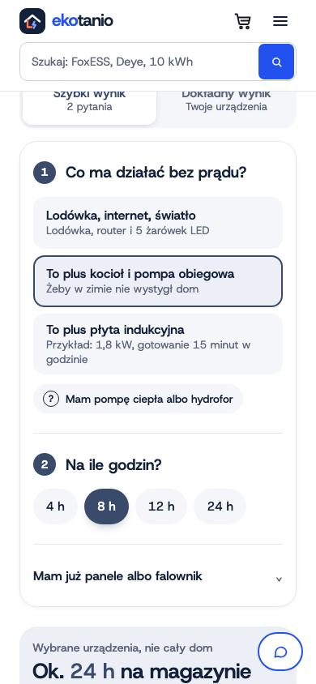
Krok 1
Wersja prosta, dwa pytania: co ma działać i na ile godzin. Wynik od razu, na falowniku ze sklepu.
Otwórz ten krok w sklepie ↗Krok 2
Wynik: ile godzin na polecanym magazynie, założenia obok (moc falownika, głębokość rozładowania, bez ładowania z paneli).
Otwórz ten krok w sklepie ↗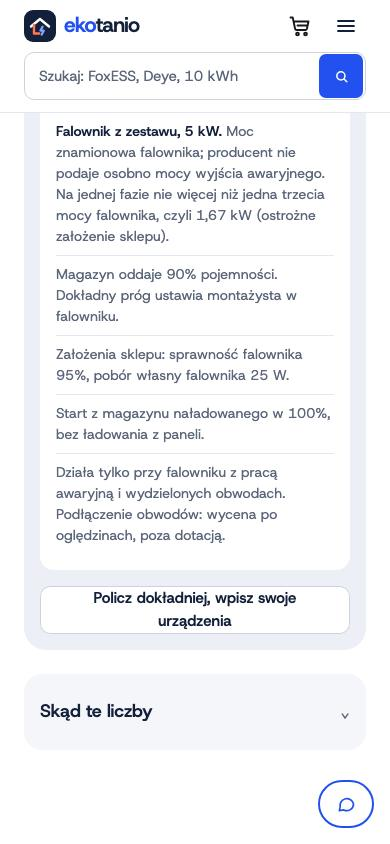
Krok 3
Założenia przy wyniku: co liczymy, skąd liczby, czego nie obiecujemy.
Otwórz ten krok w sklepie ↗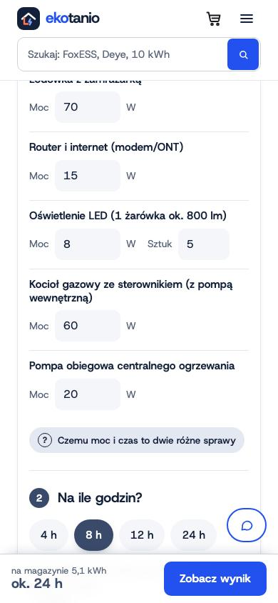
Krok 4
Przejście do wersji dokładnej: pakiet z prostej rozwija się w listę urządzeń, nic nie trzeba wpisywać od nowa.
Otwórz ten krok w sklepie ↗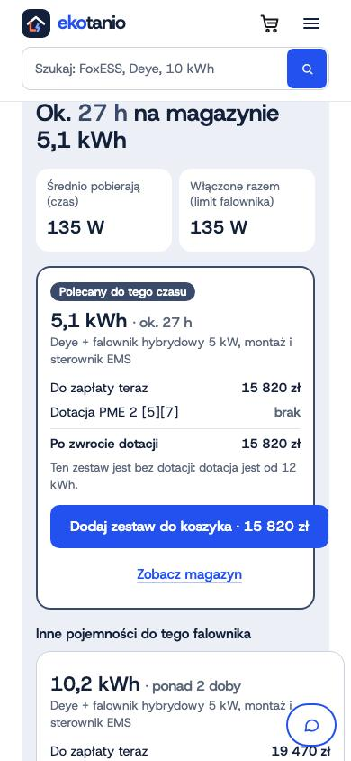
Krok 5
Wersja dokładna: średnie zużycie i suma mocy włączonych razem osobno, limit falownika.
Otwórz ten krok w sklepie ↗Porównywarka magazynów
„Który magazyn wybrać?”
- Czy na telefonie widać dwa magazyny bez przewijania w bok?
- Czy od razu widzisz, czym się różnią?
- Czy „brak danych producenta” jest zrozumiałe, a nie wygląda jak błąd?
Co już wiemy: Nowe 11.11, osobno od porównania zestawów. Cena orientacyjna, bo montaż i EMS mają cennik przykładowy. Brak wartości u producenta = „brak danych producenta”.
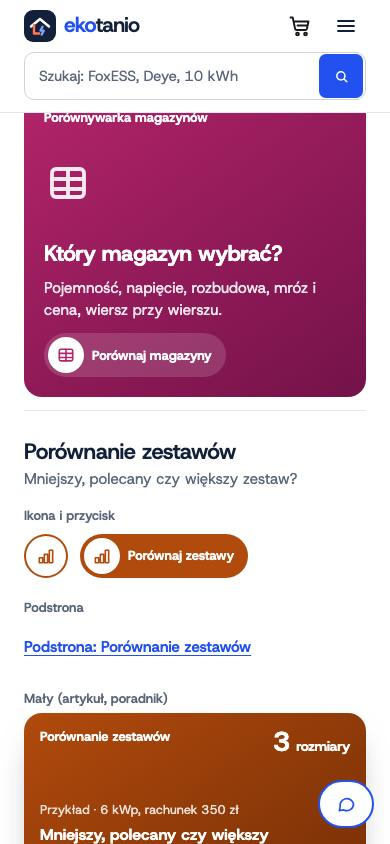
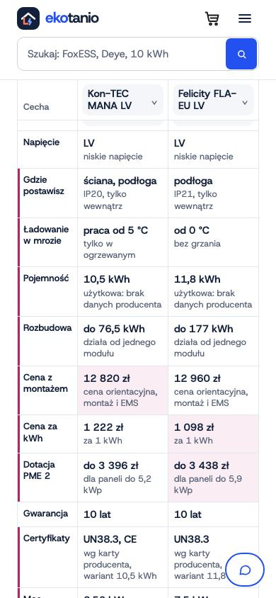
Krok 1
Startuje z trzema najtańszymi domowymi od 10 kWh (na telefonie dwie kolumny). Kolumna z cechą jest stale widoczna, nie ma przewijania w bok.
Otwórz ten krok w sklepie ↗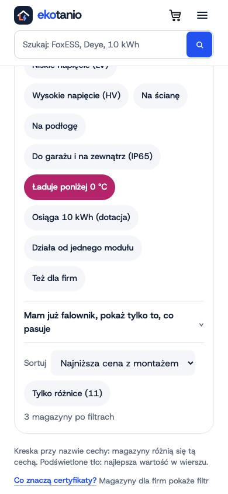
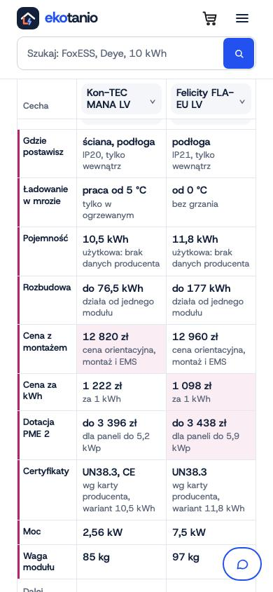
Krok 3
„Tylko różnice”: zostają wiersze, które naprawdę coś zmieniają. Kreska przy nazwie cechy oznacza różnicę, tło najlepszą wartość.
Otwórz ten krok w sklepie ↗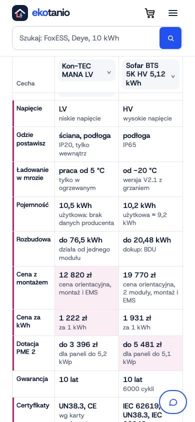
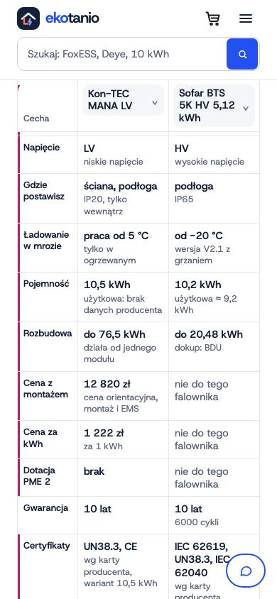
Krok 5
„Mam już falownik”: wiersz zgodności i cena liczą się pod falownik klienta, tym samym silnikiem co dobór.
Otwórz ten krok w sklepie ↗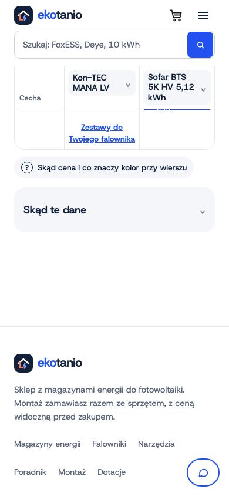
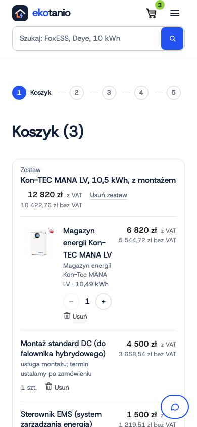